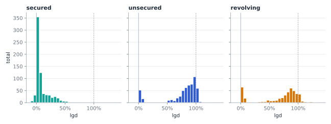

LGD 与 EAD#
借款人违约时，银行损失的是清收未能收回的那部分敞口。违约损失率（LGD）是这一损失占违约风险敞口（EAD）的比例；对授信额度而言，EAD 还包括借款人在参考日与违约之间提用的金额，这由信用转换系数（CCF）度量。LGD 和 EAD 与 PD 一起构成每笔敞口的预期损失和资本要求。
PD 来自上一篇指南 校准 ，三个参数给出的预期损失见下一篇指南 信贷策略 ， 模型验证 按监管要求回测 LGD 和 CCF 估计值， 监管资本 则把它们转化为资本要求。 workout_lgd() 由清收现金流给出每笔违约贷款的实际 LGD， conversion_factor() 给出每个授信额度的实际 CCF。 lgd_table() 按分组汇总实际 LGD， variance_edges() 按实际 LGD 拟合驱动因素的分箱， fractional_regression() 同时对多个驱动因素为其建模。
定义#
清收通过还款、处置押品或治愈从违约贷款中收回资金，也要花费资金，例如法律费用。日期 \(t_j\) 上金额为 \(a_j\) 的现金流（回收为正，费用为负）按年利率 \(r\) 折现到违约日 \(t_D\) ，天数按 ACT/365 计算：
记回收现值之和为 \(R\) ，费用现值之和（记为正数）为 \(C\) ，实际 LGD 就是经济损失占违约风险敞口的比例：
参考日额度为 \(L\) 、提用金额为 \(D\) 、违约时提用金额为 \(E\) 的授信额度，其实际 CCF 为
即其未提用部分中到违约时已提用的比例。两个量都不截断：回收超过敞口时 LGD 为负，费用超过回收时 LGD 大于 1，参考日之后还款时 CCF 为负，参考日之后额度提高时 CCF 大于 1。
计算示例#
三笔贷款于 2023 年 1 月 1 日违约，其清收按每年 10% 折现。贷款 A 在违约一年后回收 55、发生费用 11；贷款 B 在违约当天回收了全部敞口，此前一年发生了 5 的法律费用；贷款 C 还没有现金流：
>>> from kivi.lgd import workout_lgd
>>> workout_lgd(
... ["A", "B", "C"],
... ["2023-01-01"] * 3,
... [100.0, 200.0, 50.0],
... ["A", "A", "B", "B"],
... ["2024-01-01", "2024-01-01", "2022-01-01", "2023-01-01"],
... [55.0, -11.0, -5.0, 200.0],
... rate=0.1,
... ).round(4)
ead recovery cost lgd
loan
A 100.0 50.0 10.0 0.6000
B 200.0 200.0 5.5 0.0275
C 50.0 0.0 0.0 1.0000
违约一年后，贷款 A 的现金流价值为 55 / 1.1 = 50 和 11 / 1.1 = 10，因此它在 100 的敞口中损失了 100 + 10 − 50 = 60。贷款 B 违约前一年的费用复利计算为 5 × 1.1 = 5.5，因此 B 虽然收回了全部敞口，仍在 200 中损失了 5.5。贷款 C 尚无任何回收，LGD 为 1；只有它的清收已经结案，这才是它的实际 LGD。
清收 LGD#
违约贷款是一张表，每笔贷款一行；清收现金流是另一张表，每笔现金流一行，与银行系统的记录方式相同。 make_defaults() 和 make_recoveries() 模拟这样的表，见 示例数据 。每笔贷款有自己的 discount_rate ，即按 EBA 指引第 143 段的要求取违约当月的货币市场利率加 5 个百分点，因此把它作为 rate 传入：
>>> import numpy as np
>>> import pandas as pd
>>> from kivi.datasets import make_defaults, make_recoveries
>>> defaults = make_defaults(rng=0)
>>> flows = make_recoveries(defaults, rng=0)
>>> result = workout_lgd(
... defaults["loan_id"],
... defaults["default_date"],
... defaults["ead"],
... flows["loan_id"],
... flows["date"],
... flows["amount"],
... rate=defaults["discount_rate"],
... )
>>> result.head().round(4)
ead recovery cost lgd
loan
1 307147.39 221340.3613 9282.0042 0.3096
2 2471.68 392.8536 190.9515 0.9183
3 23456.26 22385.7845 26.7730 0.0468
4 14235.26 2049.2144 508.3363 0.8918
5 7642.49 227.7722 236.7750 1.0012
这就是 示例数据 用 pandas 逐笔现金流计算的 LGD。有押品的贷款 1 在一年半后处置了押品，无押品的贷款 3 已治愈，贷款 5 的费用超过了回收，因此损失超过了其敞口。101 笔贷款在违约前支付的法律费用复利计算到违约日后计入。
已结案的清收#
workout_lgd() 不知道清收是否已经结束，给出的是到目前为止的现金流造成的损失。实际 LGD 只对已结案的清收成立：长期平均和回测使用按银行对清收结束的定义回收过程已结案的违约，不计其他违约的预期未来回收。这里有 closing_date 的清收已经结案：
>>> loans = defaults.set_index("loan_id")
>>> closed = loans["closing_date"].notna()
>>> int(closed.sum()), int((~closed).sum())
(1722, 278)
未结案的清收仍计入监管所指的长期平均，长期平均要对它们作调整；kivi 把这一调整留给银行自己对未来回收的估计。
追加提款、核销和治愈#
现金流和敞口由调用者选定，EBA 的指引规定了如何选定：
治愈 使贷款恢复正常。它计为一笔回收，金额为治愈日的未偿金额，模拟数据中
kind为"cure"的现金流就是如此。违约时或违约前 核销的金额 属于敞口，从而同样计入损失和 EAD。
违约后资本化的利息和费用 不是现金流，但它们的回收是。
违约后的追加提款 是负现金流，与费用相同，从而计入损失。若 CCF 包含追加提款，EBA 把它们也计入敞口。此时把它们的现值加到
ead上，而不是作为现金流传入，因为敞口也计入损失。
一个授信额度违约时敞口为 10,000，两个月后又提用了 2,000，一年后回收 9,000。作为现金流，追加提款提高了损失：
>>> line = {"loan": [7], "default_date": ["2023-03-01"]}
>>> workout_lgd(
... *line.values(), [10_000.0], [7, 7], ["2023-05-01", "2024-02-29"], [-2_000.0, 9_000.0],
... rate=0.06,
... ).round(4)
ead recovery cost lgd
loan
7 10000.0 8490.566 1980.6183 0.349
若 CCF 包含追加提款，它的现值（只传入追加提款调用一次所得的 cost ）转入敞口：
>>> drawing = workout_lgd(*line.values(), [10_000.0], [7], ["2023-05-01"], [-2_000.0], rate=0.06)
>>> ead = 10_000.0 + drawing["cost"].to_numpy()
>>> workout_lgd(*line.values(), ead, [7], ["2024-02-29"], [9_000.0], rate=0.06).round(4)
ead recovery cost lgd
loan
7 11980.6183 8490.566 0.0 0.2913
追加提款仍在损失中计一次，现在也计入敞口，因此 LGD 从 0.349 降到 0.2913。
信用转换系数#
违约授信额度的 CCF 把违约时的提用金额与参考日的额度和提用金额相比较。监管取违约前 12 个月为参考日，即固定期限法，额度取该日的值，即已告知额度与未告知额度中的较大者；之后提高的额度不进入分母。模拟违约中的循环额度带有该日的 limit 和 drawn 金额：
>>> from kivi.lgd import conversion_factor
>>> revolving = loans[loans["segment"] == "revolving"]
>>> ccf = conversion_factor(revolving["ead"], revolving["drawn"], revolving["limit"])
>>> ccf.describe().round(3)
count 464.000
mean 0.553
std 0.707
min -3.263
25% 0.291
50% 0.554
75% 0.823
max 9.332
Name: ccf, dtype: float64
中位数额度到违约时提用了其未提用额度的 55%。负的 CCF 来自违约前偿还了部分余额的额度，大于 1 的 CCF 来自最终超过额度的额度。另外 25 个额度在参考日已满额或超额使用，没有未提用部分，也就没有 CCF：公式会除以 0，或除以负数而使符号反转。EBA 的 CCF 估计征求意见稿用违约时的提用金额除以额度来度量这类额度，ECB 的验证报告则改为回测它们的 EAD，而不是 CCF：
>>> fully_drawn = revolving["limit"] <= revolving["drawn"]
>>> int(fully_drawn.sum())
25
>>> print(round((revolving["ead"] / revolving["limit"])[fully_drawn].median(), 4))
1.0943
负的 CCF 仍能区分各额度的风险，但 CRR3 的量化把它记为 0，任何 CCF 都不得以 1 封顶。 lgd_table() 的下限 0 正好如此处理，它按参考日的额度使用率给出 CCF：
>>> from kivi.lgd import lgd_table
>>> undrawn = ccf.notna()
>>> usage = pd.cut(revolving["drawn"] / revolving["limit"], [0, 0.5, 0.75, 1])[undrawn]
>>> lgd_table(usage, ccf[undrawn])[["total", "mean", "zero_share", "full_share"]].round(3)
total mean zero_share full_share
bin
(0.0, 0.5] 138 0.582 0.094 0.109
(0.5, 0.75] 203 0.555 0.103 0.084
(0.75, 1.0] 123 0.719 0.073 0.106
到参考日已提用超过四分之三额度的额度，提用了更大比例的剩余额度。
LGD 表#
lgd_table() 汇总每个分组的实际 LGD：违约数、平均 LGD、其标准差、取值范围以及无损失违约和全额损失违约的份额。平均值中每笔违约计一次，这是监管对长期平均 LGD 的要求；默认把负的 LGD 记为 0。已结案的清收按分段汇总：
>>> realized = result[closed]
>>> table = lgd_table(loans.loc[closed, "segment"], realized["lgd"])
>>> table.drop(columns="total_share").round(4)
total mean std min max zero_share full_share
bin
secured 704 0.0957 0.1176 0.0000 0.6555 0.054 0.0000
unsecured 580 0.7773 0.2961 0.0136 1.2490 0.000 0.1190
revolving 438 0.6853 0.3512 0.0120 1.3985 0.000 0.1142

各分段已结案清收的实际 LGD（施加下限之前）。有抵押贷款损失很少；无抵押贷款和循环额度要么治愈、接近 0，要么损失大部分敞口，其中一些损失超过全部敞口。#
无押品贷款和循环额度的 LGD 呈双峰分布：治愈接近 0，清算接近 1；而大多数有押品贷款的损失不到 10%。 zero_share 包括押品价值超过其敞口的 38 笔有押品贷款， floor=None 保留它们的负值；这些值仍能区分损失的驱动因素：
>>> lgd_table(loans.loc[closed, "segment"], realized["lgd"], floor=None)[["mean", "min"]].round(4)
mean min
bin
secured 0.0941 -0.0950
unsecured 0.7773 0.0136
revolving 0.6853 0.0120
这张表的用法与连续目标下的 woe_table() 相同：传入某个驱动因素的箱，例如有押品贷款的贷款价值比，就能看到平均 LGD 如何随箱变化。箱也可以来自 bin_edges() 和 cut() ：
>>> secured = closed & (loans["segment"] == "secured")
>>> ltv = pd.cut((loans["ead"] / loans["collateral_value"])[secured], [0, 0.6, 0.8, 1, np.inf])
>>> lgd_table(ltv, realized.loc[secured[closed], "lgd"])[["total", "mean", "zero_share"]].round(3)
total mean zero_share
bin
(0.0, 0.6] 156 0.040 0.141
(0.6, 0.8] 235 0.053 0.055
(0.8, 1.0] 191 0.115 0.016
(1.0, inf] 122 0.220 0.000

已结案的有抵押贷款按贷款价值比分段的平均 LGD 和无损失贷款占比。押品覆盖的敞口越少，平均 LGD 从 4% 升到 22%，无损失的贷款也随之消失。#
欠款超过押品价值的贷款，损失是贷款价值比不超过 60% 的贷款的五倍。
按 LGD 拟合驱动因素的分段#
上面的四个分段出自人为判断。 variance_edges() 则按 LGD 来拟合分段：在该比率 20 个等频箱的所有合并方式中，它返回各箱平均 LGD 解释 LGD 方差比例最大的分箱，并要求每箱至少有 5% 的贷款，且均值逐箱上升或逐箱下降。请先像 lgd_table() 那样把 LGD 的下限设为 0，使分段拟合的正是表中求平均的 LGD：
>>> from kivi.binning import cut, variance_edges
>>> ratio = (loans["ead"] / loans["collateral_value"])[secured]
>>> secured_lgd = realized.loc[secured[closed], "lgd"].clip(lower=0)
>>> edges = variance_edges(ratio, secured_lgd)
>>> edges.round(3)
array([ -inf, 0.76 , 0.897, 0.972, 1.189, inf])
>>> fitted = lgd_table(cut(ratio, edges), secured_lgd)
>>> fitted[["total", "mean", "std", "zero_share"]].round(3)
total mean std zero_share
bin
(-inf, 0.76] 352 0.044 0.048 0.091
(0.76, 0.897] 141 0.086 0.082 0.043
(0.897, 0.972] 70 0.131 0.117 0.000
(0.972, 1.189] 105 0.203 0.145 0.000
(1.189, inf] 36 0.253 0.221 0.000
平均 LGD 从 4% 升到 25%，拟合出的分段在比率 1 附近设了一个切点，也就是抵押品不再覆盖敞口的位置。它们解释的 LGD 方差比四个固定分段更多：
>>> def explained(groups):
... means = secured_lgd.groupby(groups.cat.codes).transform("mean")
... squares = ((secured_lgd - means) ** 2).sum()
... return 1 - squares / ((secured_lgd - secured_lgd.mean()) ** 2).sum()
>>> print(f"{explained(cut(ratio, edges)):.3f} {explained(ltv):.3f}")
0.321 0.295
与二元目标的信息值一样，在拟合分段所用的贷款上算出的解释比例偏乐观；使用之前，应在之后的违约上检验这些分段。 max_bins 、 min_bin_share 和 trend 的用法与 optimal_edges() 相同，驱动因素的 special 编码会由 cut() 单独成组。
分数回归#
fractional_regression() 用 Papke 和 Wooldridge 的分数 logit 同时对多个驱动因素为 LGD 的均值建模：
响应必须在 0 到 1 之间，可以取 0 和 1，因此先把 LGD 的上限设为 1、下限设为 0。系数使与 logistic_regression() 相同的似然最大，解读方式也相同：正的系数提高平均 LGD。标准误是稳健标准误，因为分数响应在均值周围的方差与二元响应不同。下面用 2018 至 2020 年违约贷款中已结案的清收，以分段和押品对敞口的覆盖率建模：
>>> from kivi.lgd import fractional_regression
>>> features = pd.DataFrame(
... {
... "unsecured": (loans["segment"] == "unsecured").astype(int),
... "revolving": (loans["segment"] == "revolving").astype(int),
... "coverage": loans["collateral_value"] / loans["ead"],
... }
... )
>>> response = result["lgd"].clip(0, 1)
>>> development = closed & (loans["default_date"] < "2021-01-01")
>>> model = fractional_regression(features[development], response[development])
>>> model.round(4)
coef se z p_value
variable
intercept 0.1951 0.3182 0.6131 0.5398
unsecured 1.1444 0.3345 3.4214 0.0006
revolving 0.8236 0.3345 2.4621 0.0138
coverage -1.9216 0.2479 -7.7513 0.0000
押品降低 LGD，无押品贷款的损失高于循环额度。每笔贷款的拟合平均 LGD 由系数得出；在开发样本上，拟合均值的平均等于其平均 LGD，带截距的 logit 的均值都是如此：
>>> eta = model.loc["intercept", "coef"] + sum(
... model.loc[column, "coef"] * features[column] for column in features
... )
>>> estimated = 1 / (1 + np.exp(-eta))
>>> print(f"{estimated[development].mean():.4f} {response[development].mean():.4f}")
0.4840 0.4840
回测#
按 ECB 验证报告的要求，用 backtest_table() 的 t 检验以已结案清收的实际值回测 LGD 和 CCF 估计值，并用 generalized_auc() 的广义 AUC 衡量其排序能力。2021 年起违约贷款中已结案的清收用来验证模型：
>>> from kivi.calibration import backtest_table
>>> validation = closed & (loans["default_date"] >= "2021-01-01")
>>> backtest_table(
... loans.loc[validation, "segment"], result.loc[validation, "lgd"], estimated[validation]
... ).round(4)
total estimated realized difference variance statistic p_value
bin
secured 364 0.0940 0.0920 -0.0020 0.0099 -0.3807 0.6482
unsecured 329 0.7924 0.7633 -0.0291 0.0979 -1.6891 0.9539
revolving 224 0.7347 0.6324 -0.1023 0.1493 -3.9646 1.0000
没有分段拒绝估计值（这里的 p 值检验估计值是否偏低），但循环额度的实际 LGD 比估计值低 10 个百分点。近期已结案的违约是清收较短的那些，因为较长的还没有结案：2021 至 2024 年已结案的循环额度有四分之一治愈，而 2018 至 2020 年的只有八分之一。这正是长期平均要对未结案的清收作调整的原因。
gAUC 在报告的十二个 LGD 分段中比较估计值的排序与实际 LGD 的排序；实际 LGD 先把下限设为 0，使每个值都落入某个分段：
>>> from kivi.metrics import generalized_auc
>>> segments = [0, 0.05, 0.1, 0.2, 0.3, 0.4, 0.5, 0.6, 0.7, 0.8, 0.9, 1, np.inf]
>>> estimated_segment = pd.cut(estimated[validation], segments, right=False)
>>> realized_segment = pd.cut(result.loc[validation, "lgd"].clip(lower=0), segments, right=False)
>>> generalized_auc(estimated_segment, realized_segment).round(4)
estimate se lower upper
statistic
gauc 0.8384 0.0098 0.8191 0.8576
somers_d 0.6767 0.0196 0.6383 0.7152
模型验证 解释了报告中的检验和分段，以及 gAUC 与初始验证时 gAUC 的比较。实际 CCF 以同样的方式回测；满额使用额度的 EAD 以违约时的提用金额作为实际值回测。
巴塞尔、EBA 和中国的规则#
这些函数计算实际值，周围的规则留给调用者：哪些违约计入、折现率、估计值的下限。下表把巴塞尔框架（自 2023 年 1 月 1 日起生效的 CRE 各章）、EBA 的 PD 和 LGD 估计指引（EBA/GL/2017/16）以及 CRR3（Regulation (EU) 2024/1623）的规则与中国《商业银行资本管理办法》（国家金融监督管理总局令 2023 年第 4 号）的规则并列，并注明所依据的段落和条款。
规则 |
巴塞尔和 EBA |
中国，2023 年规则 |
在 kivi 中 |
|---|---|---|---|
实际 LGD |
经济损失与违约时未偿金额之比（EBA 131）：未偿金额加上重大的直接和间接费用，减去折现到违约日的回收（EBA 132），来源不明的回收也计入（EBA 133）。损失是经济损失而不是会计损失，包括重大的折现效应和费用（CRE36.76）。 |
损失与违约债项风险暴露之比（附件 5 六（四）1），风险暴露包括本金和应计未付的利息、费用；基于经济损失，包括直接和间接成本（六（四）2）。 |
|
折现率 |
违约日的 3 个月 EURIBOR（或该币种可比的流动性利率）加 5 个百分点，用于回收、费用和追加提款（EBA 143），因此随违约日和币种而不同。 |
反映清收期间持有违约资产成本的利率；回收不确定时加风险溢价，确定时可用无风险利率（六（四）2（3））。 |
|
日计数 |
未规定。 |
未规定。 |
ACT/365 |
违约前的费用 |
违约前发生的重大清收费用也计入，除非已包含在未偿金额中或属于更早的违约（EBA 144–146）。 |
未见专门规定。 |
复利计算到违约日 |
违约后的追加提款 |
计入损失（EBA 142）；若 CCF 包含追加提款，也计入敞口（EBA 140），未作此处理的零售敞口不计入敞口（EBA 141）。 |
未见专门规定。 |
负现金流；若 CCF 包含追加提款，则把其现值计入 |
违约后资本化的利息和费用 |
不增加损失，其回收照常计入（EBA 137–138）。 |
未见专门规定。 |
不作为现金流传入 |
核销 |
违约时或违约前核销的金额加到未偿金额上，同时计入损失和敞口（EBA 134）。 |
未见专门规定。 |
加到 |
治愈 |
一笔金额为治愈日未偿金额的回收，与其他现金流一样折现；多次违约从第一次违约起算（EBA 135）。 |
附件 5 未涉及。 |
治愈日的一笔回收 |
未结案的清收 |
观察平均只用已结案的清收，不含预期的未来回收（EBA 154；结案的定义见 EBA 157）；长期平均对未结案的清收作调整（EBA 158），且不得剔除观察期内的任何违约（EBA 163）。ECB 只回测已结案的清收（其报告说明第 2.3(i) 和 2.6.1(d) 节）。 |
银行设定并记录清收完成的时间点（六（四）7）。 |
先筛选已结案的清收 |
长期平均 |
按违约数的算术平均（EBA 150），不按年平均；零售可给近期数据更高的权重（EBA 150–152）。长期违约加权平均（CRE36.83、CRE36.81）。 |
不低于长期违约加权平均损失率（六（四）4）。 |
不带 |
负的 LGD 和超过 100% 的 LGD |
计算观察平均和长期平均时，负的实际 LGD 逐笔记为 0，未截断的值可用于风险区分（EBA 160）；远高于 100% 的值保留，并查明原因或单独分段（EBA 162）。 |
小于 0 的样本按 0 处理（六（四）15）。 |
|
LGD 下限 |
用于估计值，不用于实际 LGD：无担保公司敞口 25%，个人住房抵押贷款 5%，QRRE 50%，其他无担保零售敞口 30%（CRE32.16、CRE32.58–59）。 |
相同，但个人住房抵押贷款为 10%（第九十二条）。 |
由调用者施加，例如用 |
规则 |
巴塞尔和欧盟 |
中国，2023 年规则 |
在 kivi 中 |
|---|---|---|---|
自行估计 CCF |
只限标准法 CCF 低于 100% 的未提用循环承诺（CRE32.36，零售为 CRE32.63；CRR3 第 166(8b) 条）。 |
可循环的表外项目；其他项目用第八十二条的 CCF，100% 的仍为 100%（第九十三条三、四）。 |
不检查 |
EAD 下限 |
表内金额加上表外金额按标准法 CCF 计算的 50%（CRE32.36，零售为 CRE32.64；CRR3 第 166(8c) 条，中央政府除外）。 |
公司敞口取内部估计与上述两项之和中的较大者（第九十三条三）；零售敞口没有下限（第九十三条四），与巴塞尔不同。 |
由调用者施加 |
参考日 |
12 个月固定期限法：借款人和债项特征取违约前 12 个月的值（CRE36.93；CRR3 第 182(1)(g) 条；EBA/CP/2025/10 第 59 段）。放款后 12 个月内违约的，取未提用额度严格为正的最早日期（EBA/CP/2025/10 第 60 段）。 |
12 个月固定期限法，或能证明审慎的其他方法（附件 5 六（五）12）。 |
参考日的 |
实际 CCF |
违约时提用金额减去参考日提用金额，除以参考日额度减去参考日提用金额（CRE36.95 脚注；EBA/CP/2025/10 第 61(a) 段）；ECB 按银行模型的定义计算（第 2.9.1(b) 节）。 |
口径相同，取违约加权长期平均（六（五）3）。 |
|
额度 |
已告知额度与未告知额度中的较大者（CRR 第 4(1)(56) 条）；之后提高的额度不进入分母，因此 CCF 可以达到 200%（EBA/CP/2025/10 例 3）。 |
未见专门规定。 |
参考日的 |
满额或超额使用的额度 |
使用率达到 100% 起，改用违约时提用金额除以参考日额度（EBA/CP/2025/10 第 61(b) 段），或用银行设定的使用率阈值（第 61(c) 和 73 段）；接近满额使用时该因子不稳定（CRE36.95）。对采用 EAD 方法的债项，ECB 改为回测 EAD，而不是 CCF（第 2.9.1(g) 和 2.9.3 节）。 |
需关注接近满额使用时该因子的不稳定（六（五）14）。 |
NaN；由调用者计算 |
负的 CCF |
量化时记为 0，未截断的值可用于风险区分（CRR3 第 182(1) 条；EBA/CP/2025/10 第 99 段）；ECB 报告被截断的比例。 |
未见专门规定。 |
不截断； |
上限 |
不以 100% 封顶，参考数据也不封顶（CRE36.95–96；CRR3 第 182(1d) 条；EBA/CP/2025/10 背景部分第 22 段）。 |
不应设置本金上限（六（五）15）。 |
不封顶 |
初级法的 CCF |
与标准法相同：100%、50%、承诺 40%、20%，可无条件撤销的承诺 10%（CRE32.33、CRE20.95–100）；75% 是旧值。 |
第八十二条的 CCF（第九十三条二）：100%，贷款承诺 40%（可无条件撤销的 10%），未使用的信用卡额度 40% 或 20%，NIF 和 RUF 50%。 |
不计算 |
EBA 的 CCF 估计征求意见稿 EBA/CP/2025/10（2025 年 7 月 2 日）在编写 kivi 1.6 时尚未定稿；CRR3 第 182(5) 条要求在 2026 年底前发布正式指引。
缺失值#
workout_lgd() 对缺失的贷款、日期、敞口、金额或利率报错，因为每一项都决定损失：没有现金流的贷款不是缺失，而是没有任何回收。 conversion_factor() 对缺失的金额给出 NaN，因此有缺口的资产组合保持其形状。 lgd_table() 对缺失的 LGD 报错，缺失的分组单独成组； fractional_regression() 对缺失的驱动因素或响应报错。
样本权重#
lgd_table() 和 fractional_regression() 接受频数权重：整数权重与重复相应行得到相同的表、估计值和标准误。监管所指的长期平均中每笔违约计一次，因此按敞口给违约加权得到的是敞口加权平均 LGD，是另一个量。应使用计数违约的权重，例如抽样比例的倒数；与 logistic_regression() 一样，这时回归的标准误会偏小。
局限#
未结案清收的实际 LGD 是到目前为止的损失。kivi 不估计未结案清收的未来回收、长期平均对它们的调整、违约后 LGD 或 ELBE。
经济下行期 LGD、保守性边际以及估计值的 LGD 和 EAD 下限由银行施加。
conversion_factor()不实现 EBA 征求意见稿中满额使用额度的因子，因为该稿尚未定稿；workout_lgd()不区分现金流的种类，因此按追加提款调整敞口需要再调用一次，如上所示。分数 logit 为平均 LGD 建模。治愈和全额损失都很多的双峰 LGD 常分两阶段建模，例如用逻辑回归对治愈建模，再用分数回归对未治愈贷款的损失建模，这可以组合现有函数实现。
错误与警告#
回收早于违约日。 违约前的还款不属于清收；检查日期，或把这笔还款计入敞口。
某笔现金流所属的贷款不在 loan 中。 每笔现金流都必须属于某一笔违约贷款，每笔贷款只列一次。
响应超出 [0, 1]。 在调用
fractional_regression()之前，把实际 LGD 的下限设为 0、上限设为 1。SeparationError。 某个驱动因素把损失为 0 的行与损失为 1 的行分开，而没有介于二者之间的损失约束其系数，例如某个分段中每笔贷款都损失了全部敞口。把该分段与相邻分段合并，或去掉该驱动因素。
RuntimeWarning: fractional regression did not converge。 拟合在 100 次迭代后停止；检查驱动因素是否有极端值。